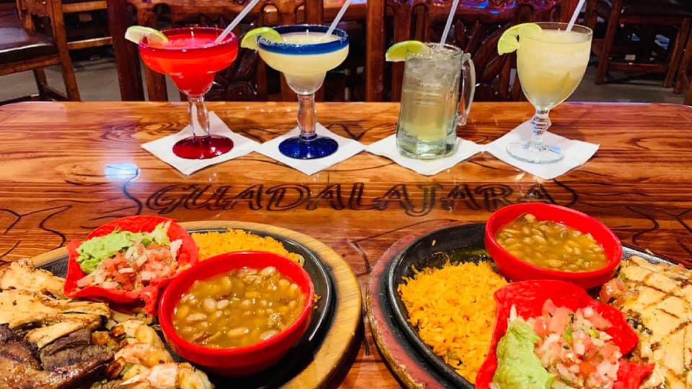

Carne asada & fajitas
Charbroiled beef marinated in a special sauce, served with a cheese enchilada, guacamole and pico de gallo, plus sizzling fajita plates.
Mexican restaurant · Bastrop, TX
Charbroiled carne asada, chimichangas al carbon and fresh ingredients.

What's on the plate
House favorites.
Charbroiled beef marinated in a special sauce, served with a cheese enchilada, guacamole and pico de gallo, plus sizzling fajita plates.

A golden fried chimichanga al carbon with Mexican gravy and melted cheese, plus the XL burrito and shrimp diablo.

Enchiladas in red sauce, burritos and tamales with rice and refried beans, made from traditional family recipes.


4.3 ★ · 1595 Google reviews
I really think the chef must have moved here from my hometown in East Texas because the flavors were spot on with our absolute favorite Mexican restaurant in Nac that closed several years ago. We were in town for two days and we ate here both days. The food, service, and atmosphere are all great. They have a five layer dip that has a mix of flavors that are beyond delicious. Go try it. You won't be sorry!!
The food is so good. This is my favorite meal it’s delicious 🤤 kids menu too. My kids love their food all the time
Solid Mexican food in Bastrop. Service was friendly and attentive.
Nuestra historia
A green sign, colored roofline lights, carved wooden chairs and a hand-painted village mural.
Traditional family recipes, fresh ingredients, friendly servers and a kids menu.

Ven a vernos
494 Highway 71W, Bastrop, TX 78602
Open every day. Call ahead and your pickup order is hot and ready.